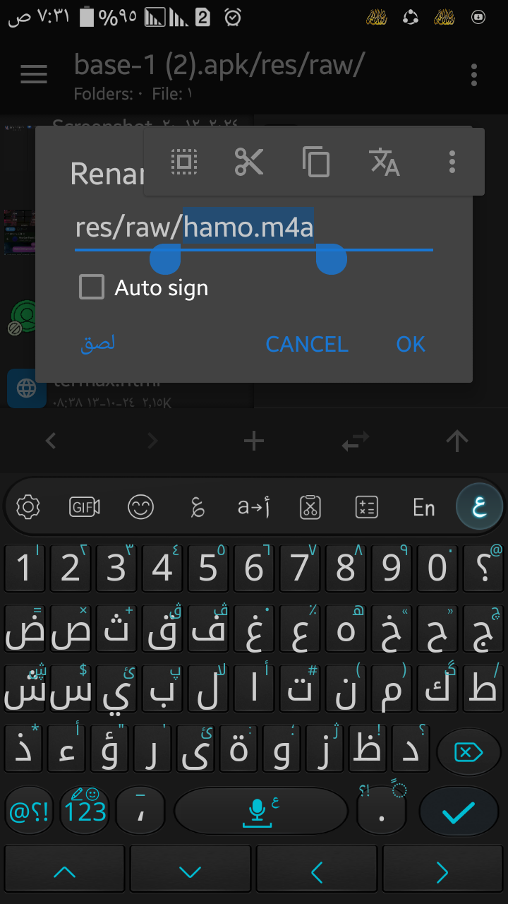

للرجوع
هتعمل كل الخطوات اللي قولتلك تعملها في شرح استخراج اغنية من تطبيق لحد ما تلاقي الاغنية وتسيبها
طبعاً mt manager مقسوم لصفحتين
ولنفرض مثلا ان التطبيق في الصفحة الشمال وانت فاتحه على الاغنية اللي انت لاقيتها وعايز تستبدلها باغنية جديدة
في الصفحة اليمين هتكون الاغنية الجديدة هي اللي محطوطة
هتجيب الاغنية اللي في التطبيق وتضغط عليها فترة وتختار rename
هتبتدي تحدد الاسم من علامة الاسلاش /الاخيرة لحد الاخر زي ما في الصورة تحت

بعدين تضغط على الزرار اللي لو بصيت في الصورة عامل زي علامة النسخ او زي الصورة دي
بعدين تيجي على الاغنية الجديدة وتضغط فترة بعدين rename
هتحدد الاسم كله بعدين تضغط على كلمة لصق
بعدين تضغط ok وتضغط على الاغنية الجديدة فترة تاني وتضغط على كلمة move
تضغط على ملف التطبيق تاني بعدين تختار function
بعدين تضغط على اول زرار او sign apk
بعدين هتضغط على كلمة V1+V2+V3وتحولها للاصدار بتاع التطبيق الاصلي
لو عايز تعرف ازاي تجيب رقم الاصدار اعمل الخطوات الجايه دي
هتخش على التلت شرط اللي فوق خالص على الشمال
بعدين تضغط على كلمه extract apk
بعدين تبحث لحد ما تلاقي اسم التطبيق وتضغط عليه
رقم الاصدار هتلاقيه في الحته اللي انا مشاور عليها في الصورة اللي تحت👇
بعدين تضغط ok
هتلاقي نسخه تانيه اتعملت
هوا ده التطبيق الجديد
هتضغط عليه وتعمل install
وممكن يطلب منك انك تمسح التطبيق الاول وتحمل التطبيق التاني
بس ده الشرح مقدم من
™ŴỖĹƑ ϺÃŜŤẸŘ